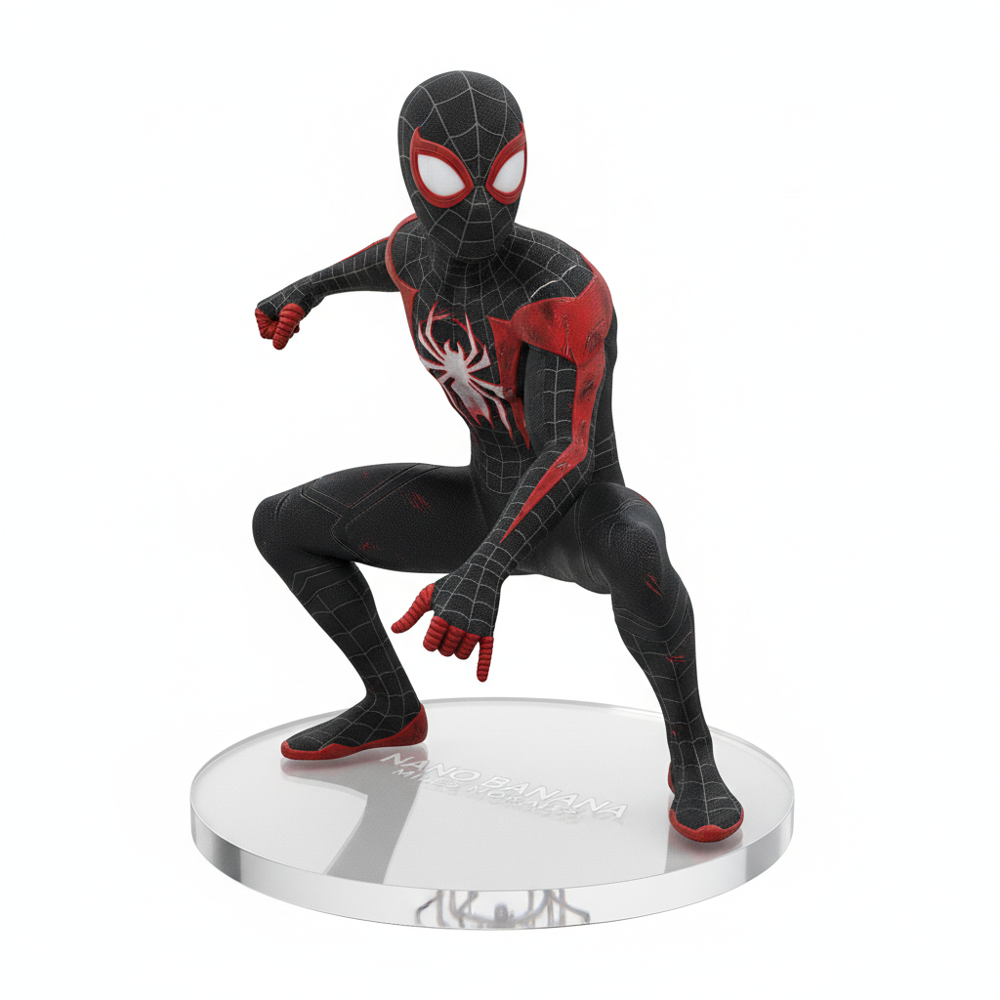
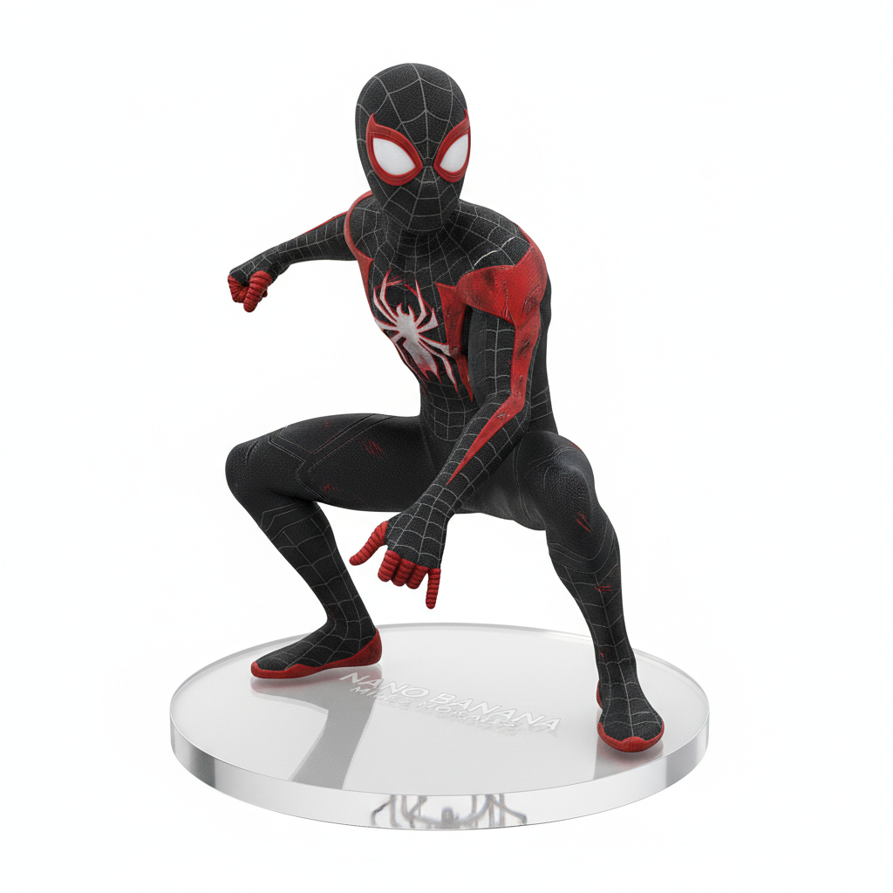

The Allure of Nano Banana: Exploring 3D Figurines and Collections in the AI Era
In the fast-paced world of AI-driven creativity, few trends have captured the imagination of hobbyists and artists like Nano Banana. More than just a passing fad, this AI tool—now easily accessible via nanobananas.me (a dedicated platform for calling the Nano Banana AI model)—has become a cornerstone for crafting detailed 2D assets that evolve into tangible or digital treasures: specifically, Nano Banana 3D figurines and curated Nano Banana collection sets.
This article dives into the heart of the Nano Banana ecosystem: from understanding the Nano Banana model’s capabilities (harnessed via nanobananas.me) to turning its 2D outputs into 3D models (with hands-on use of meshy.ai), and finally, building meaningful collections that blend technology and art. Whether you’re a beginner eager to make your first Nano Banana 3D model or a collector seeking unique pieces, this guide covers every essential step—with practical tool integrations and space for visual references.
What Is the Nano Banana Model?
To unlock the potential of Nano Banana 3D figurines and collections, you first need to grasp the tool behind it all: the Nano Banana model. And the most intuitive way to access this model is through nanobananas.me—a user-friendly platform built to maximize the model’s strengths for 3D figurine prep.
Origins and Core Functionality
Emerging from AI creative communities, the Nano Banana model is widely speculated to have ties to Google’s Gemini ecosystem—thanks to its output style aligning with Google’s AI tools and social media hints from Google employees. At its core, it’s a lightweight yet powerful AI image generator and editor—but nanobananas.me elevates its utility by focusing on two key use cases for 3D figurine creators:
- 2D Image Generation: Turn text prompts into high-detail visuals tailored for 3D conversion. For example, inputting “1/7 scale BANDAI-style Spider-Man figurine with red and gold armor, circular transparent acrylic base” on nanobananas.me yields a precise 2D reference in minutes—no traditional art skills required.
- Prompt Extraction Task Model: A unique feature on nanobananas.me that refines vague or incomplete prompts into actionable, 3D-friendly descriptions. If you type “a cool anime character figurine,” the tool might extract and expand it to “1/7 scale realistic anime character figurine with short black hair, blue school uniform, and plain white base—optimized for 2D to 3D conversion.” This ensures your 2D output has all the details needed for a high-quality Nano Banana 3D model.

Key Features for 3D Figurine Prep (via nanobananas.me)
Two aspects of the Nano Banana model—enhanced by nanobananas.me’s design—make it indispensable for 3D work:
How to Create Nano Banana 3D Figurines: A Step-by-Step Guide
Turning the Nano Banana model’s 2D outputs (from nanobananas.me) into physical or digital Nano Banana 3D figurines is a straightforward process—even for beginners. The key addition here is meshy.ai, a tool I’ve tested extensively for 2D-to-3D conversion, which streamlines turning nanobananas.me’s 2D images into print-ready STL files.
Step 1: Generate a 2D Reference with nanobananas.me
Start by crafting a hyper-specific prompt tailored to Nano Banana 3D figurines—or use nanobananas.me’s prompt extraction tool to refine your idea. Here’s a tested example of a high-quality prompt for the platform:
“Realistic 1/7 scale Nano Banana 3D figurine of Miles Morales (Spider-Verse), black and red suit with white spider logo and subtle wear marks, standing on a 5cm circular transparent acrylic base, no background, high detail for 3D printing.”
The Nano Banana model (via nanobananas.me) will generate a 2D image that serves as your “blueprint.” If details like hair strands or suit纹路 (grain) are unclear, refine the prompt directly in the platform: “Enhance hair texture (add individual strands) and sharpen suit纹路 on the Miles Morales Nano Banana 3D figurine reference.”

Step 2: Convert 2D to a Nano Banana 3D Model with meshy.ai
Once you have your optimized 2D image from nanobananas.me, the next step is converting it to a usable Nano Banana 3D model (STL/GLB format). After testing multiple tools, meshy.ai stands out for its ease of use and figurine-specific optimization—here’s how to use it:
For Beginners: meshy.ai’s “Figurine Mode” (My Go-To Workflow)
Meshy.ai has a dedicated mode for small-scale 3D figurines, which skips unnecessary steps and prioritizes details critical for printing. Here’s the exact process I follow:

For Advanced Creators: meshy.ai + Professional Software (Blender/ZBrush)
If you want more control (e.g., adjusting a figurine’s pose or adding custom accessories), combine meshy.ai with Blender or ZBrush. Here’s how:
- First, generate a base 3D model from your nanobananas.me image via meshy.ai—export it as an OBJ file (supports more detail than STL for editing).
- Import the OBJ file into Blender:
- Use the “Image Projection” tool to overlay your original nanobananas.me 2D image, ensuring the 3D model matches the 2D proportions.
- Refine details: Add facial expressions (e.g., adjust Miles’ smile) or modify the suit (e.g., add a utility belt) using Blender’s sculpting tools.
- Once edited, export as an STL file—this level of precision ensures your Nano Banana 3D figurine stands out in a collection (e.g., a one-of-a-kind Miles Morales with a custom pose).
Step 3: Finalize for Printing or Digital Use
- Print and post-process: Remove supports with flush cutters, sand small imperfections (use 400-grit sandpaper), and paint if needed (I use acrylic paints to match the nanobananas.me 2D reference).
 

Digital Figurines (for Virtual Collections)
For space-saving or shareable Nano Banana collection pieces, optimize your meshy.ai model for digital use:
- Export the meshy.ai model as a GLB file (supports textures and animations, unlike STL).
- Add textures in Blender or Sketchfab: Use the nanobananas.me 2D image as a texture map (e.g., apply the suit’s red/gold pattern to the 3D model) to ensure consistency.
- Upload to platforms like Sketchfab (add tags like “Nano Banana 3D figurine” or “Miles Morales”) or Decentraland (build a virtual “collection room” where visitors can rotate and interact with the figurine).
Building Your Nano Banana Collection: Digital and Physical Options
A Nano Banana collection is more than just a set of figurines—it’s a showcase of your creativity, tied together by the consistency of nanobananas.me’s 2D outputs and meshy.ai’s 3D conversions. Whether you prefer physical shelves or virtual galleries, here’s how to build a cohesive, valuable collection.
Types of Nano Banana Collections
1. Physical Collections (3D Printed)
The most tangible way to enjoy Nano Banana 3D figurines, physical collections benefit from the precision of nanobananas.me and meshy.ai—no more “hit-or-miss” details. Here’s how to curate one:
- Print Nano Banana 3D figurines using resin (for small, detailed pieces) or PLA (for larger ones)—all from meshy.ai STL files generated from nanobananas.me 2D references.
- Standardize display: Use matching bases (e.g., all 5cm circular acrylic bases, as referenced in your nanobananas.me prompts) and shelf lighting (warm white LEDs to highlight details).
- Popular themes (tested with nanobananas.me prompts):
Tips for a Cohesive Collection
- Stick to a Theme: A cohesive theme (e.g., “Sci-Fi Mecha,” “Retro Video Game Characters,” or “Marvel Spider-Verse”) ties your collection together. Use nanobananas.me’s prompt extraction tool to keep theme-specific details consistent—for example, all “Sci-Fi Mecha” figurines could include “metallic gray armor with blue LED accents” in their prompts.
- Prioritize Consistency: Use the same scale (1/7 is ideal for most collections) and base style for all Nano Banana 3D figurines. When generating 2D references on nanobananas.me, include “1/7 scale, circular transparent acrylic base” in every prompt—meshy.ai will preserve this consistency in the 3D model, making your shelf or virtual room look polished.
- Document Your Process: Save screenshots of your nanobananas.me prompts, meshy.ai settings, and final 3D prints/digital models. This not only helps you replicate successful designs but also adds a “behind-the-scenes” layer to your collection (e.g., share the process on social media with tags #NanoBananaCollection).
Challenges to Navigate for Nano Banana 3D Figurines and Collections
While creating Nano Banana 3D figurines and collections via nanobananas.me and meshy.ai is accessible, there are hurdles to address—most of which have simple fixes based on my hands-on testing.
Technical Hurdles (and How to Fix Them)
1. 3D Model Quality: Missing Details from 2D to 3D
Issue: Sometimes, meshy.ai may lose small details from your nanobananas.me 2D image—e.g., fine armor纹路, individual hair strands, or small accessories like a character’s necklace.
Solution:
- Optimize your nanobananas.me prompt: Add “high detail for small elements (hair strands, armor engravings)” to ensure the 2D image prioritizes these details.
- Adjust meshy.ai settings: Set “Detail Level” to “Very High” (adds 1–2 minutes to generation time but preserves small elements) and “Edge Sharpness” to “High” (keeps lines like armor edges crisp).
- Post-process in Blender: If a detail is still missing (e.g., a necklace), use Blender’s “Add Mesh” tool to recreate it—reference your original nanobananas.me 2D image for accuracy.
2. Size Accuracy: 3D Model Doesn’t Match 1/7 Scale
Issue: Even if you include “1/7 scale” in your nanobananas.me prompt, the meshy.ai 3D model may be too large or small (e.g., 1/5 scale instead of 1/7).
Solution:
- Add specific dimensions to your nanobananas.me prompt: Instead of just “1/7 scale,” use “1/7 scale (22cm tall, 5cm base diameter)” (standard 1/7 figurine size). This gives meshy.ai a clear size reference.
- Adjust scale in meshy.ai: After generating the model, use the “Scale Tool” to set the height to 22cm before exporting the STL file—no Blender needed.
- Verify in slicing software: Import the meshy.ai STL into Cura and check the “Model Dimensions” panel—adjust if needed before printing.
Copyright and Ethics
When building a Nano Banana collection, legal and ethical considerations are key—especially when using IP-based characters:
- IP Infringement Risk: Creating a Nano Banana 3D figurine of a Disney, Marvel, or anime character (e.g., Mickey Mouse, Goku) for personal use is fine—but selling it (even on Etsy) could lead to legal action. Instead, focus on:
- Original designs: Use nanobananas.me’s prompt extraction tool to create unique characters (e.g., “1/7 scale cyberpunk warrior with a plasma sword, original design, no IP ties”).
- Licensed IPs: If you want to sell IP-based figurines, obtain permission from the copyright holder (e.g., contact a small indie game studio to license their characters).
- Ownership of AI-Generated Models: The Nano Banana model (via nanobananas.me) generates the 2D base, but your prompts, refinements, and meshy.ai settings mean you own the final Nano Banana 3D model. Keep records: Save your nanobananas.me prompt history and meshy.ai settings screenshots—this proves your creative input if ownership is questioned.
The Future of Nano Banana 3D Figurines and Collections
The Nano Banana model (and tools like nanobananas.me and meshy.ai) are only growing, with exciting trends on the horizon that will make Nano Banana 3D figurines and collections even more accessible and creative.
Technological Advancements (Tools & Models)
1. Direct Text-to-3D in nanobananas.me
Current workflow: nanobananas.me (2D) → meshy.ai (3D). Future possibility: nanobananas.me may integrate direct text-to-3D generation, skipping the 2D step entirely. Imagine inputting “1/7 scale BANDAI-style Spider-Man figurine” and getting a print-ready STL file directly from the platform—no meshy.ai needed (though meshy.ai could still be used for editing).
The Growth of the Community and Market
1. Expansion of the Nano Banana Enthusiast Community
As nanobananas.me and meshy.ai make 3D figurine creation easier, the community will grow—expect more:
- Online forums: Dedicated spaces to share nanobananas.me prompts, meshy.ai settings, and collection photos (e.g., a Reddit subreddit like r/NanoBananaCollections).
- Challenges: Community-led contests (e.g., “Create a Nano Banana 3D figurine of an original sci-fi character using nanobananas.me and meshy.ai”) with prizes like 3D printing filament or nanobananas.me premium credits.
The key to success is leveraging these tools intentionally: use nanobananas.me to refine your vision into a detailed 2D reference, meshy.ai to bring it to 3D life, and our Nano Banana Prompt Reference Guide to unlock the best results. As the ecosystem evolves, Nano Banana collection and Nano Banana 3D figurines will only become more accessible and creative—proving that AI (when paired with human vision) isn’t just a tool, but a collaborator in bringing your ideas to life.
Ready to start? Head to nanobananas.me to generate your first 2D reference, and use our prompt guide to make it 3D-ready.